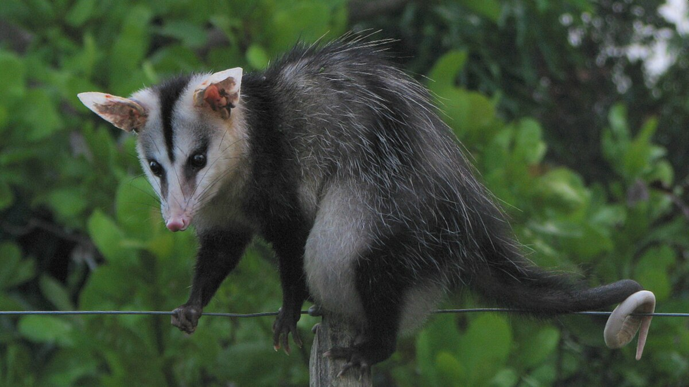
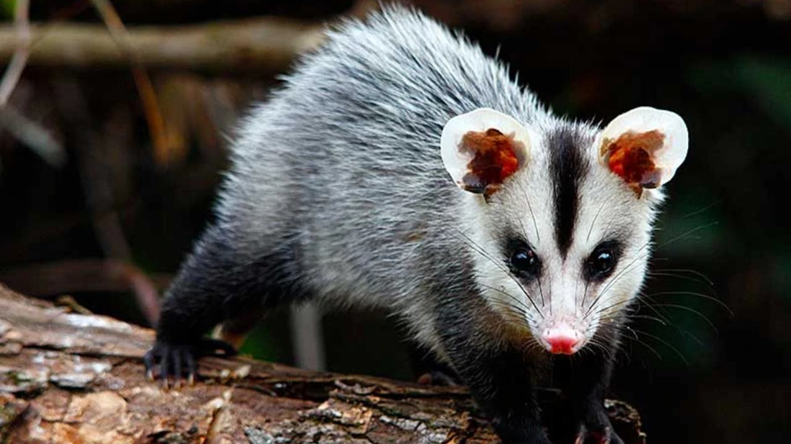
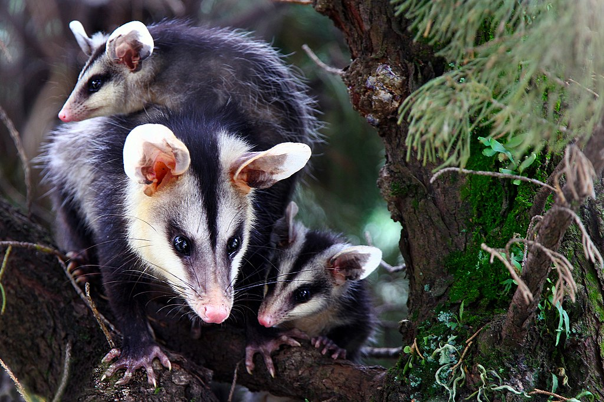
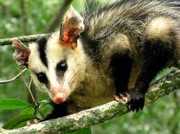
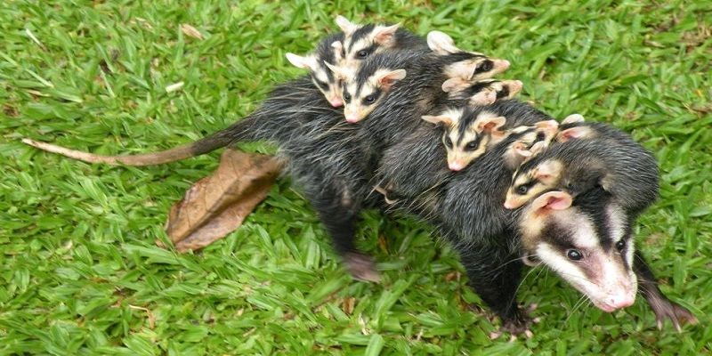
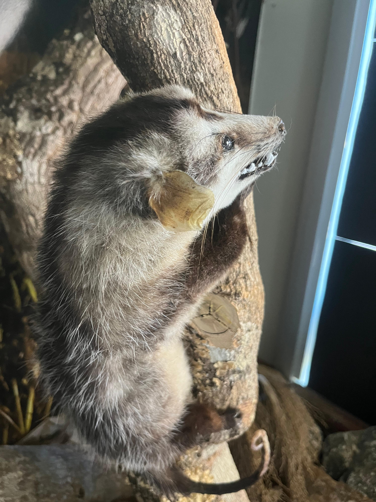

Gambá-de-orelha-branca






INFORMAÇÕES SOBRE O ANIMAL
- Nome Científico: Didelphis albiventris
(Linnaeus, 1758) - Nomes Populares: Conhecido também como "gambá de orelha branca" e "gambá-de-orelha-branca"
- Som do Animal:
Classificação Biológica
- Domínio: Eukaryota
- Reino: Animalia
- Filo: Chordata
- Classe: Mammalia
- Ordem: Didelphimorphia
- Família: Didelphidae
- Gênero: Didelphis
- Espécie: D. albiventris
Nutrição Geral e Hábitos Alimentares
- Tipo de Nutrição: Heterotrófico
- O gambá de orelha branca é um onívoro, alimentando-se de uma dieta variada que inclui insetos, frutas, pequenos vertebrados, e ovos. Sua dieta pode variar dependendo da disponibilidade de alimentos e do ambiente em que vive.
Morfologia
- Pelagem e Corpo
A pelagem é geralmente cinza-escura com uma característica marcação branca nas orelhas e na região ventral.
O corpo é robusto e alongado, com membros relativamente curtos.
O gambá de orelha branca possui uma cauda preênsil, que usa para se equilibrar e agarrar objetos.
Órgãos Respiratórios
O aparelho respiratório do gambá inclui narinas, fossas nasais, cavidade nasal, seios paranasais, faringe, laringe, traqueia e pulmões. Os pulmões são simples e possuem uma estrutura básica.
Patas
As patas anteriores possuem cinco dedos com garras afiadas, enquanto as patas posteriores possuem também cinco dedos, sendo úteis para a locomoção e escalada. Comportamento
- Os gambás de orelha branca são animais noturnos e solitários. São conhecidos por sua habilidade de se adaptar a diversos tipos de ambientes, incluindo áreas urbanas. Eles têm um comportamento defensivo, frequentemente fingindo-se de mortos ("playing dead") para evitar predadores. São também bastante ágeis e escaladores habilidosos.
Ocorrência
- O gambá de orelha branca é encontrado na América do Sul, abrangendo países como Brasil, Argentina, Paraguai e Uruguai. Prefere habitats variados, desde florestas até áreas urbanas e regiões agrícolas.
- Mapa de Ocorrência
Reprodução
- Sistema de Acasalamento: O gambá de orelha branca tem um sistema de acasalamento poligínico, onde o macho pode se acasalar com várias fêmeas.
Reprodução ao Longo do Ano: A reprodução pode ocorrer durante todo o ano, dependendo das condições ambientais.
Gestação: A gestação dura cerca de 12 a 14 dias.
Ninhadas: As fêmeas geralmente dão à luz de 6 a 13 filhotes por ninhada. Os filhotes nascem em um estágio de desenvolvimento relativamente precoce e são levados pela mãe na bolsa marsupial até estarem mais maduros.

Animal no MUZOO.